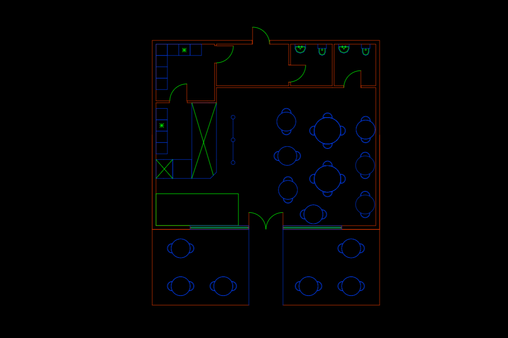
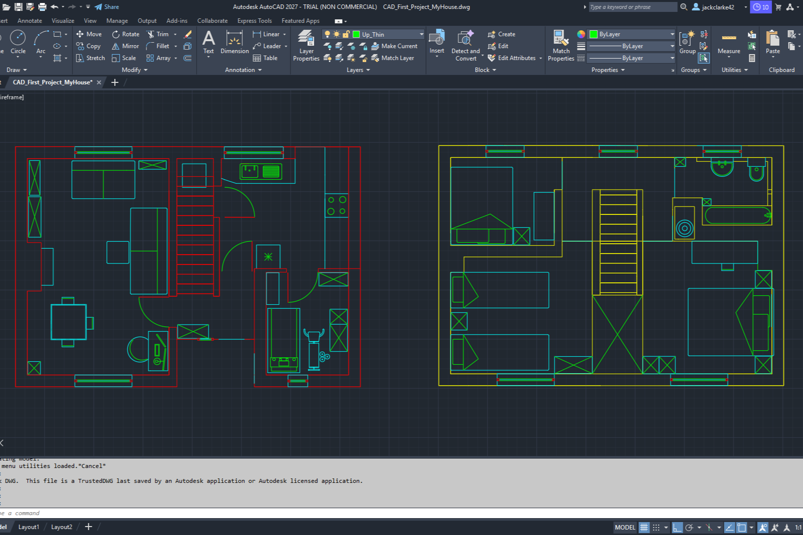

AutoCAD and Revit Projects – 28/06/2026
Currently, I am learning computer aided design (CAD) and building information modelling (BIM) in AutoCAD and Revit using their free trial offers.
My goal is to understand the basic tools and functionality of both programs by following guided tutorials before moving on to a small selection of self-directed projects.
1. AutoCAD to Revit - House
For my first project I measured and recreated my 2-storey house in AutoCAD 2D. Once the floor plan was complete, I imported it into Revit and translated it into a 3D model, downloaded and added suitable furniture, and rendered high-quality images of the house.
2. 2D/3D AutoCAD - Mechanical Gear
For my second project I used AutoCAD for both 2D and 3D work to better understand how it differs from Revit. After a quick Google search for beginner CAD projects, I settled on a mechanical gear. This project introduced me to foundational tools such as polar arrays, extrude, boundaries, pedit, and overkill. It also reinforced the importance of clean linework when moving from 2D into a 3D workspace.
3. 2D/3D AutoCAD - Bridge
For my third project I built a Warren truss bridge in AutoCAD. This project further developed my understanding of structural modelling, linear arrays, and careful layer management. I began by constructing the 2D truss profile before extruding the elements into a 3D structure. Different materials were assigned to individual components to distinguish structural parts visually and improve realism in the final model.
Overall, these projects have given me a solid introduction to both AutoCAD and Revit while reinforcing the importance of patience, problem-solving, and learning through practical experience. Each project presented new challenges that required research, experimentation, and perseverance to overcome. Completing these projects has given me the confidence to continue developing my skills, and I aim to use this experience as a foundation for a junior or trainee CAD/BIM role where I can continue learning in a professional environment.
Thanks for reading,
Jack

